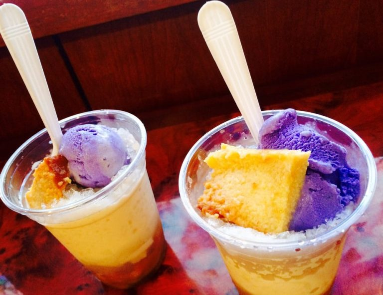

Halo-Halo
This ultimate Filipino summer treat, Halo-halo is a sure and delicious way to cool down. With the combination of shaved ice and many different layers of sweet beans, fruits and other treats then drizzled with milk. Let us not forget the toppings, leche flan, ube halaya or even ube ice cream!
Recipes
- crushed or shaved ice
- milk (fresh or evaporated)
- sugar, if needed
- sweetened saba or plantain bananas
- sweetened sweet potatoes
- fresh or sweetened langka (jack fruit)
- sweetened garbanzos or beans
- coconut strips or sweetened macapuno
- sweetened red munggo
- nata de coco (coconut gel)
- sago or tapioca pearls or jelly cut into cubes
- pinipig
- leche flan (topping)
- ube jam or ube ice cream (topping)
Procedures
- In a tall glass, add a teaspoon of each of your selected ingredients.
- Add sugar if you like.
- Fill the glass with shaved ice up to the brim.
- Drizzle with milk
- Add the toppings of choice.
- Serve with a long spoon to mix ('halo') and enjoy.